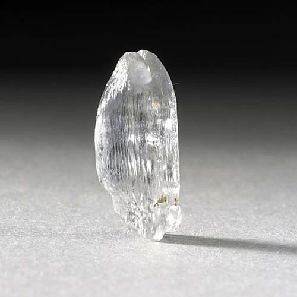
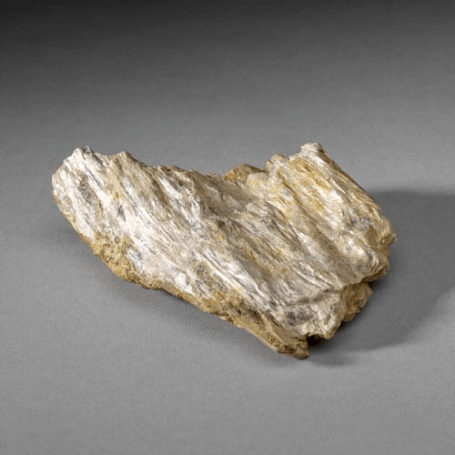
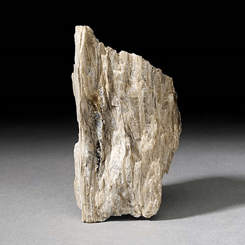

Sillimanite - Al2O(SiO4)
Nesosilicates




Habit: Colorless or white to gray; also brown, yellow, yellow green, gray green, blue green or blue. Crystals prismatic and may be acicular, with square cross-sections, rounded and striated, poorly terminated; also as fibrous mats, rarely radiating. Vitreous to subadamantine luster; transparent to translucent. White streak.
Environment: Characteristic of high-temperature regional and thermal metamorphism of pelitic rocks; occurs in amphibolite to granulite facies.
Etymology: Named for Benjamin Silliman (1779-1864), an American chemist and geologist at Yale University.